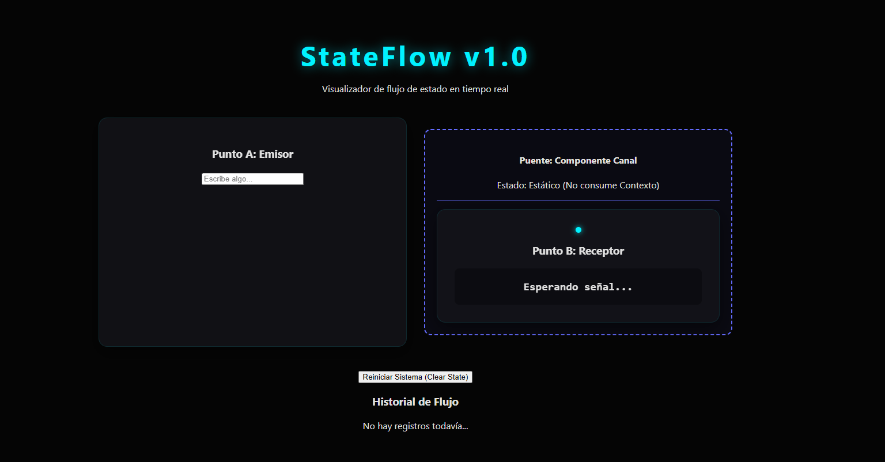
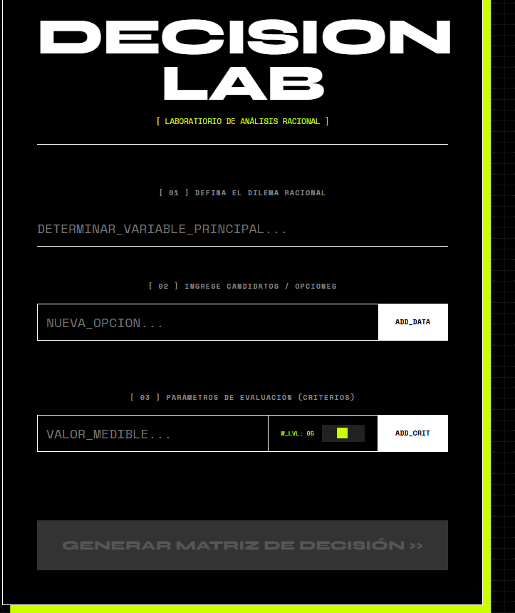
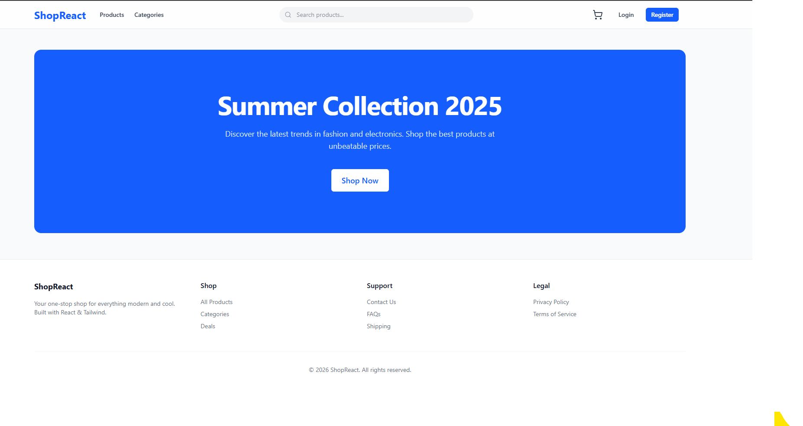
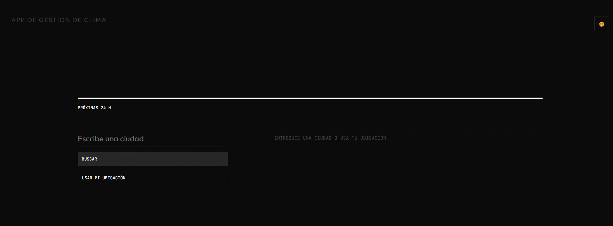
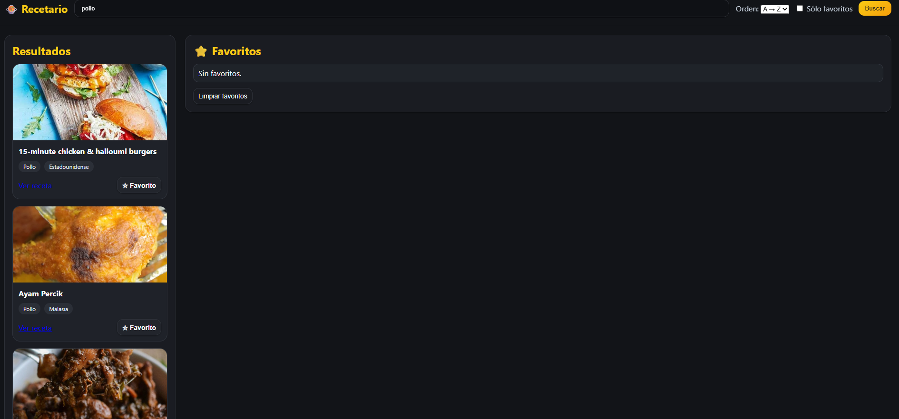

Aportaría a tu equipo
- Aprendizaje Acelerado: Integración inmediata en nuevos stacks tecnológicos y flujos de trabajo corporativos.
- Arquitectura UX: Desarrollo de interfaces centradas en el usuario con altos estándares de accesibilidad.
- Mentalidad Proactiva: Identificación y ejecución de mejoras optimizando la mantenibilidad del código.
- Escalabilidad: Diseño de componentes modulares y reutilizables bajo principios SOLID y Clean Code.
- Visión de Producto: Compasión por el detalle visual sin comprometer la velocidad ni el rendimiento.
- Colaboración Sinergia: Experto en comunicación técnica y resolución creativa de retos en equipo.
Trayectoria Académica
Formación Oficial
- Desarrollo de Aplicaciones Multiplataforma (DAM) Especialización técnica y arquitectónica | 2022-2024
- Sistemas Microinformáticos y Redes (SMR) Fundamentos de infraestructura y sistemas | 2013-2015
Especialización & Certificaciones
- Front-End Bootcamp 2025 Enfoque avanzado en React, Next.js y ecosistema moderno.
- Ciberseguridad & Performance Optimización de aplicaciones y blindaje de datos.
Proyectos
Proyectos en desarrollo para mi repositorio como prácticas personales:
-

StateFlow
-

DecisionLab
-

Ecommerce con React
-

ClimaApp
-

BuscadorRecetas
-
LifeWeeks
{kind=link}
{kind=link}
{kind=link}
{kind=link}
{kind=link}
{kind=link}
Principios de Desarrollo
Rigor Didáctico: Escribo código asumiendo que alguien más (o yo mismo en el futuro) lo mantendrá. Nombramiento semántico, modularidad y documentación clara son pilares en cada línea que programo.
Metodología de trabajoMentalidad Profesionalista: Mi estándar no es "que funcione", sino que sea excelente. Aplico principios de Clean Code y escalabilidad incluso en mis proyectos más pequeños, preparándome para entornos de alto nivel.
Compromiso de calidadAutonomía y Aprendizaje: Gestiono mis proyectos con el rigor de una empresa: control de versiones sistemático, optimización de recursos y una curiosidad insaciable por las mejores prácticas del sector.
Crecimiento continuo